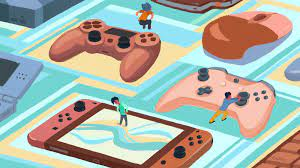

Me gusta mucho ver y practicar deportes, mis favoritos son el futbol y la fórmula 1, luego tambien veo NFL y NBA. Mis equipos favoritos son el Real Madrid, Los Angeles Lakers y Miami Dolphins y mis pilotos favoritos son Sergio Pérez, Fernando Alonso y Aryton Senna.
Juego bastantes videojuegos y tengo gustos muy variados aunque mis favoritos son los fps, aunque tambien juego juegos de carreras y juegos con modo historia.

Armar y reparar computadoras es otro de mis Hobbies y es quizás en el mejor me desenvuelvo aunque sea el que menos tiempo le dedico. Ensamblé mi primera computadora cuando tenía 18 años y luego otras tres computadoras para mis amigos y ya despues empece a reparar computadoras de otras personas.